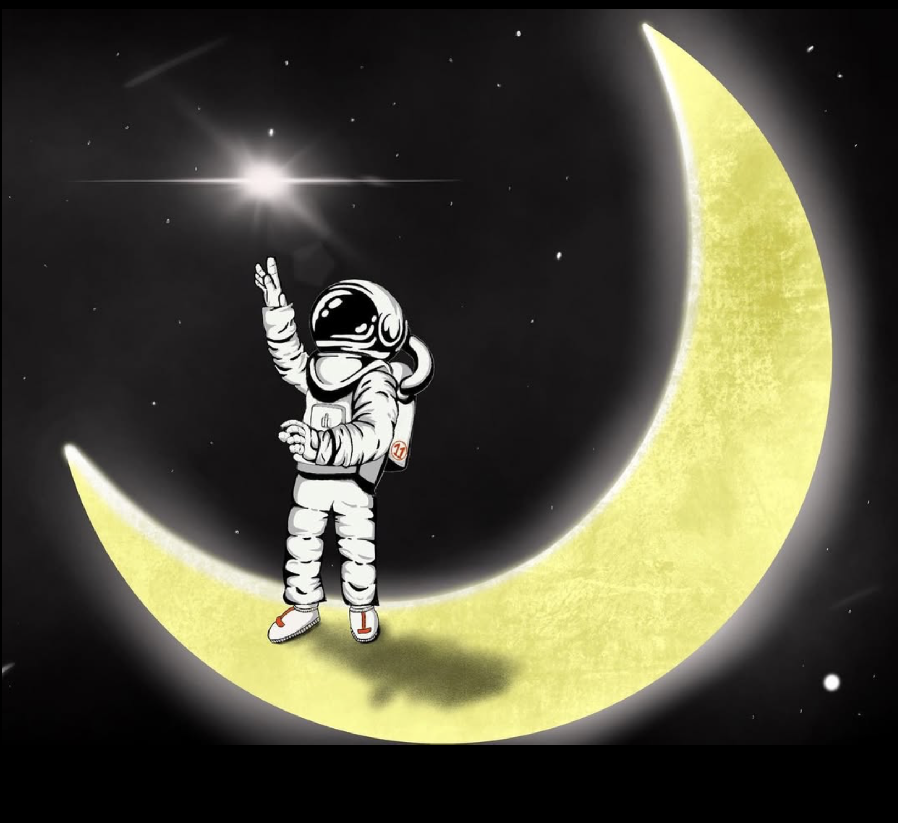
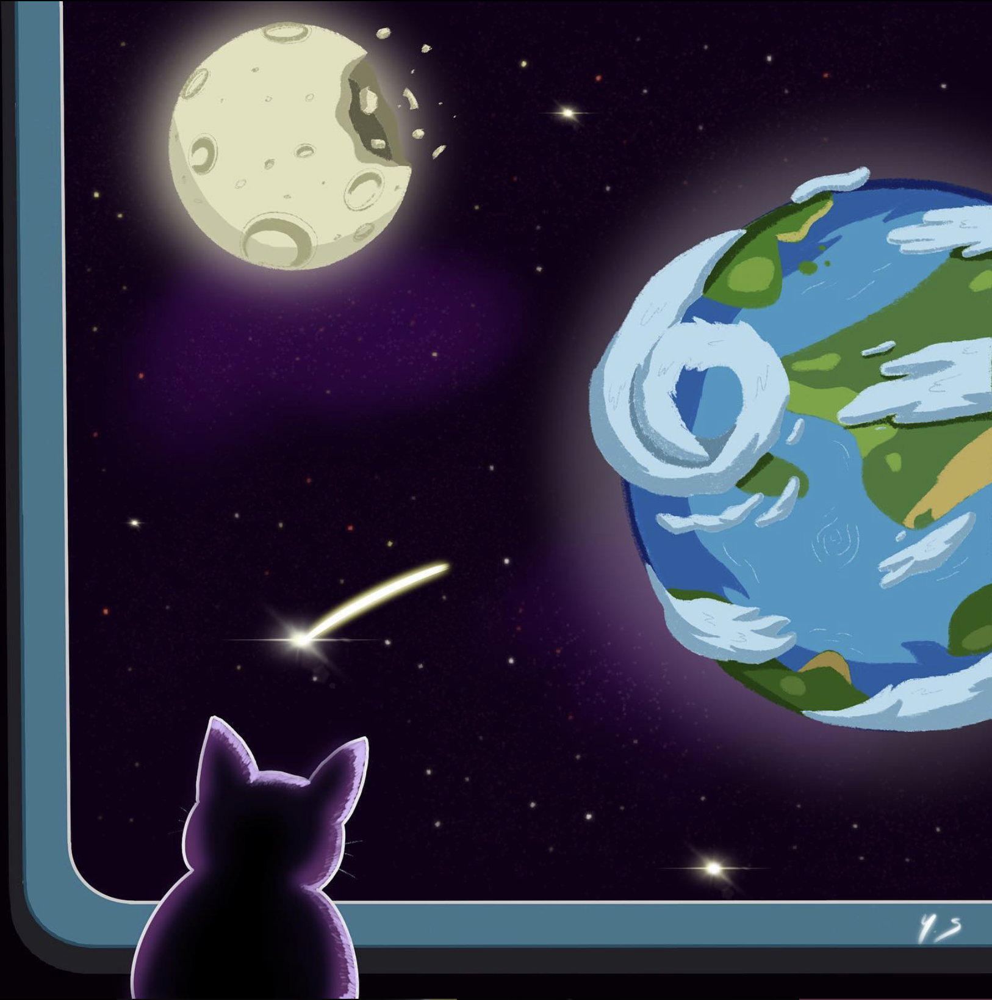
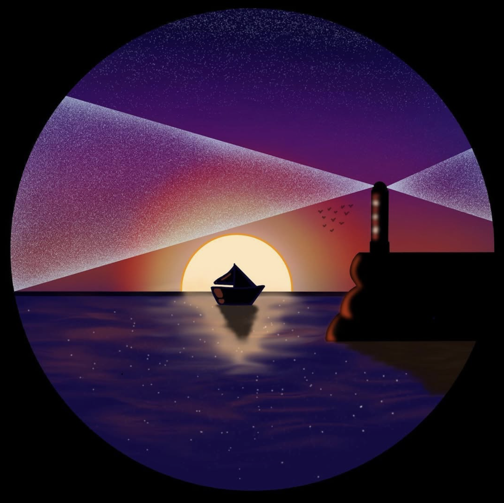
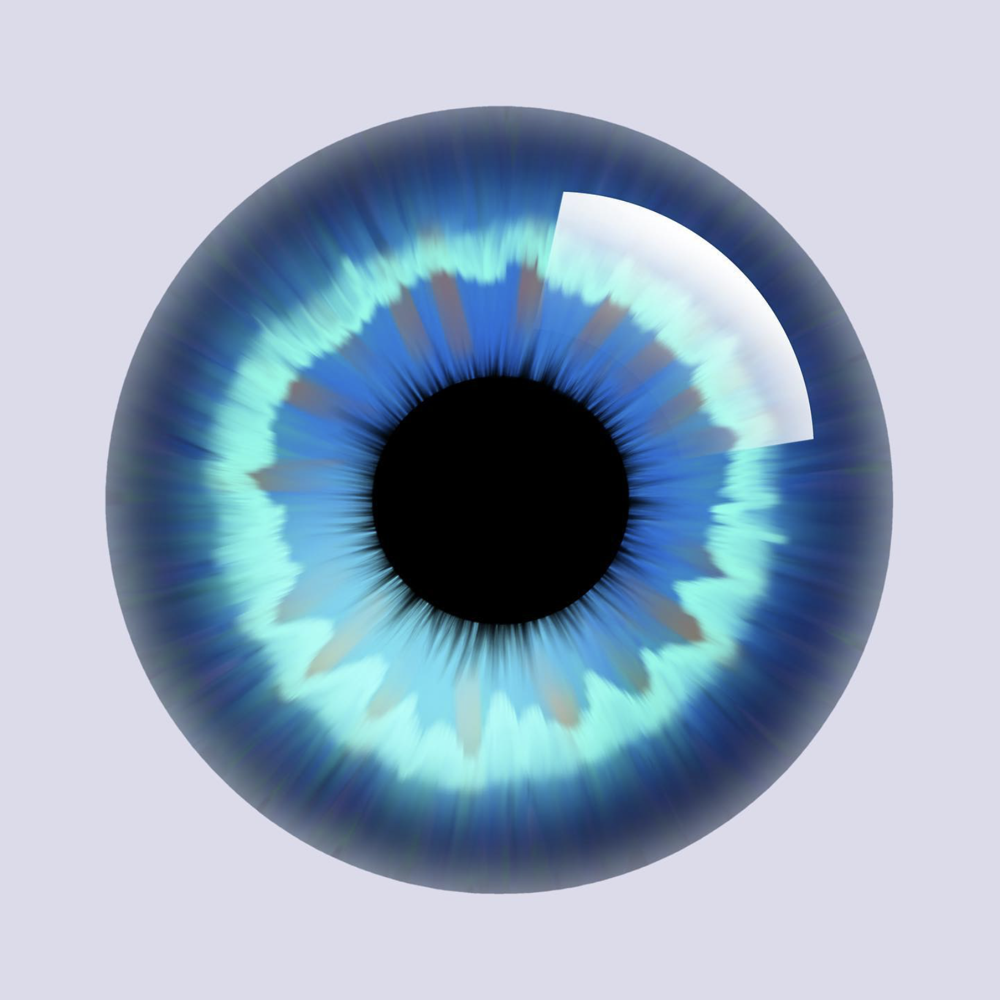
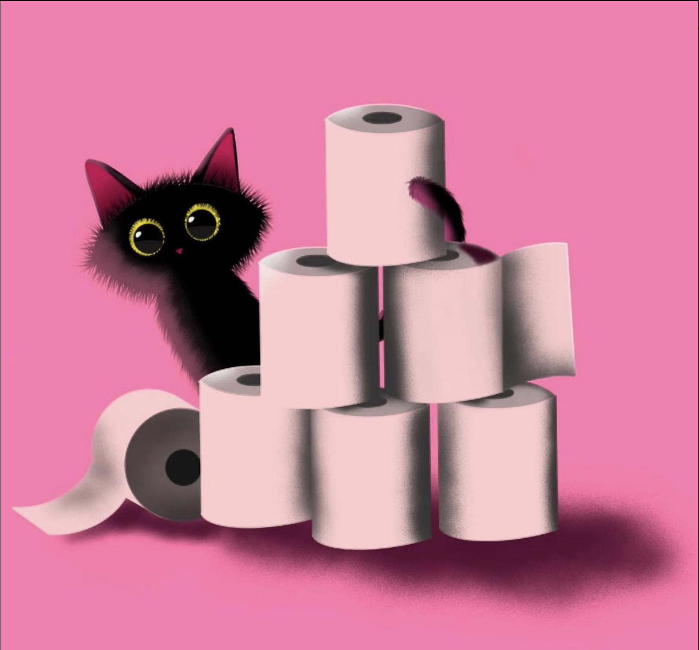
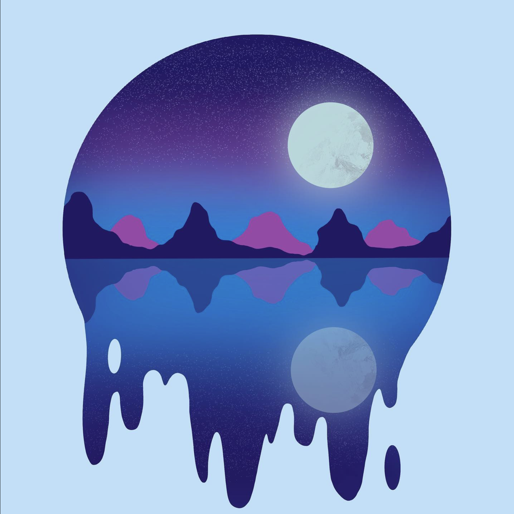
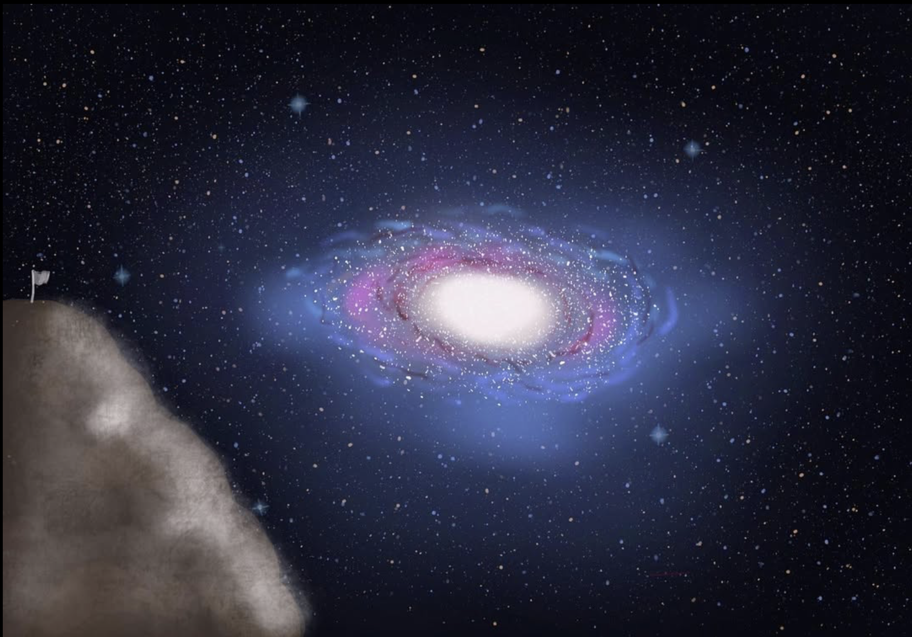

Beyond engineering and research, I enjoy creating visual work — paintings and personal projects that explore color, composition, and sometimes science-inspired themes. This page showcases a selection of those pieces.

Title of painting #1
My most recent painting, I wanted to represent my dream to become an astronaut one day. I have always had this hunger of discovering the mysteries
behind the cosmos.

Title of painting #2
Another example piece. I wanted to show the fascination I have for the Universe through
the image of this cat spending hours watching our solar system.

Title of painting #2
My most romantic paint, displaying a lighthouse and the contrast between the light coming from it and the sun shining through the horizon.

Title of painting #2
I have always been fascinated by eyes, you can sometimes feel like you could read people's soul just by looking right in their eyes.

Title of painting #2
Back in my hometown in France I remember my cats loving to play with these toilet paper rolls.

Title of painting #2
Being born in the Pyrenées in France, I have always felt connected to the nature. Mountains are beautiful companions during starry nights.

Title of painting #2
My very first paint, trying the capture the beauty of our galaxy in a clear nightsky.